Code
import arviz as az
import matplotlib.pyplot as pp
from matplotlib import rcParams
import numpy as np
import pandas as pd
import pymc as pmPreamble: This is a data analysis and modeling project to predict voter party preference in Estonia on the basis of demographics. The intended process involves initial data exploration, followed by the construction, fitting, and analysis of a series of increasingly complex Bayesian categorical models. This Bayesian approach offers a robust alternative to traditional frequentist Analysis of Variance (ANOVA) methods commonly employed in scientific research and A/B/n testing in fields such as marketing, user experience (UX), and web design. A significant benefit of the Bayesian model is its inherent ability to quantify predictive uncertainty through the calculation of posterior (inferential) probability distributions, contrasting with the reliance on sampling distributions in frequentist procedures
Contents:
Data Provenance: This data is courtesy of SALK. SALK refers to the Liberal Citizen Foundation in Estonia; a political organization aimed at influencing Estonian policy and parliamentary elections. This foundation was established with the (ultimately attained) goal of helping liberal forces gain a majority in the 2023 Estonian parliamentary elections.
Acknowledgments: I thank Alex Andorra and the folks at Intuitive Bayes for helping me understand non-identifiability and overparameterization in statistical modeling.
import arviz as az
import matplotlib.pyplot as pp
from matplotlib import rcParams
import numpy as np
import pandas as pd
import pymc as pmrcParams['font.size'] = 12data = pd.read_csv('~/projex/elections/data/estonian-data.csv')data.head().T| 0 | 1 | 2 | 3 | 4 | |
|---|---|---|---|---|---|
| age_group | 16-24 | 16-24 | 16-24 | 16-24 | 16-24 |
| education | Basic education | Basic education | Basic education | Basic education | Basic education |
| gender | Male | Male | Male | Male | Male |
| nationality | Estonian | Estonian | Estonian | Estonian | Estonian |
| electoral_district | Haabersti, Põhja-Tallinn ja Kristiine | Harju- ja Raplamaa | Harju- ja Raplamaa | Harju- ja Raplamaa | Harju- ja Raplamaa |
| unit | Kristiine | Harjumaa | Harjumaa | Harjumaa | Harjumaa |
| EKRE | 0 | 0 | 0 | 1 | 0 |
| Eesti 200 | 0 | 0 | 0 | 0 | 0 |
| Hard to say | 0 | 0 | 0 | 0 | 0 |
| Isamaa | 0 | 0 | 0 | 0 | 0 |
| Keskerakond | 0 | 0 | 0 | 0 | 1 |
| Mitte ükski erakond | 1 | 0 | 0 | 0 | 0 |
| Other | 0 | 0 | 0 | 0 | 0 |
| Parempoolsed | 0 | 0 | 0 | 0 | 0 |
| Reformierakond | 0 | 1 | 0 | 0 | 0 |
| Rohelised | 0 | 0 | 0 | 0 | 0 |
| SDE | 0 | 0 | 1 | 0 | 0 |
I don’t like the “Hard to say” column name; replace below with the clearer “Undecided” label.
data.rename(columns={'Hard to say': 'Undecided'}, inplace=True)data.info()<class 'pandas.core.frame.DataFrame'>
RangeIndex: 5206 entries, 0 to 5205
Data columns (total 17 columns):
# Column Non-Null Count Dtype
--- ------ -------------- -----
0 age_group 5206 non-null object
1 education 5206 non-null object
2 gender 5206 non-null object
3 nationality 5206 non-null object
4 electoral_district 5206 non-null object
5 unit 5206 non-null object
6 EKRE 5206 non-null int64
7 Eesti 200 5206 non-null int64
8 Undecided 5206 non-null int64
9 Isamaa 5206 non-null int64
10 Keskerakond 5206 non-null int64
11 Mitte ükski erakond 5206 non-null int64
12 Other 5206 non-null int64
13 Parempoolsed 5206 non-null int64
14 Reformierakond 5206 non-null int64
15 Rohelised 5206 non-null int64
16 SDE 5206 non-null int64
dtypes: int64(11), object(6)
memory usage: 691.6+ KBdata.columns.tolist()['age_group',
'education',
'gender',
'nationality',
'electoral_district',
'unit',
'EKRE',
'Eesti 200',
'Undecided',
'Isamaa',
'Keskerakond',
'Mitte ükski erakond',
'Other',
'Parempoolsed',
'Reformierakond',
'Rohelised',
'SDE']data.describe().T| count | mean | std | min | 25% | 50% | 75% | max | |
|---|---|---|---|---|---|---|---|---|
| EKRE | 5206.0 | 0.124856 | 0.330587 | 0.0 | 0.0 | 0.0 | 0.0 | 1.0 |
| Eesti 200 | 5206.0 | 0.082981 | 0.275880 | 0.0 | 0.0 | 0.0 | 0.0 | 1.0 |
| Undecided | 5206.0 | 0.127353 | 0.333400 | 0.0 | 0.0 | 0.0 | 0.0 | 1.0 |
| Isamaa | 5206.0 | 0.054552 | 0.227126 | 0.0 | 0.0 | 0.0 | 0.0 | 1.0 |
| Keskerakond | 5206.0 | 0.119285 | 0.324155 | 0.0 | 0.0 | 0.0 | 0.0 | 1.0 |
| Mitte ükski erakond | 5206.0 | 0.181521 | 0.385487 | 0.0 | 0.0 | 0.0 | 0.0 | 1.0 |
| Other | 5206.0 | 0.007876 | 0.088403 | 0.0 | 0.0 | 0.0 | 0.0 | 1.0 |
| Parempoolsed | 5206.0 | 0.002305 | 0.047960 | 0.0 | 0.0 | 0.0 | 0.0 | 1.0 |
| Reformierakond | 5206.0 | 0.215136 | 0.410956 | 0.0 | 0.0 | 0.0 | 0.0 | 1.0 |
| Rohelised | 5206.0 | 0.017480 | 0.131063 | 0.0 | 0.0 | 0.0 | 0.0 | 1.0 |
| SDE | 5206.0 | 0.066654 | 0.249446 | 0.0 | 0.0 | 0.0 | 0.0 | 1.0 |
data.loc[:, 'EKRE':].sum(axis=1).describe().loc[['min', 'max']]min 1.0
max 1.0
dtype: float64data.loc[:, 'EKRE':].sum(axis=0).plot(kind='bar', title='Party Choice', ylabel='Counts', color='black', alpha=0.6);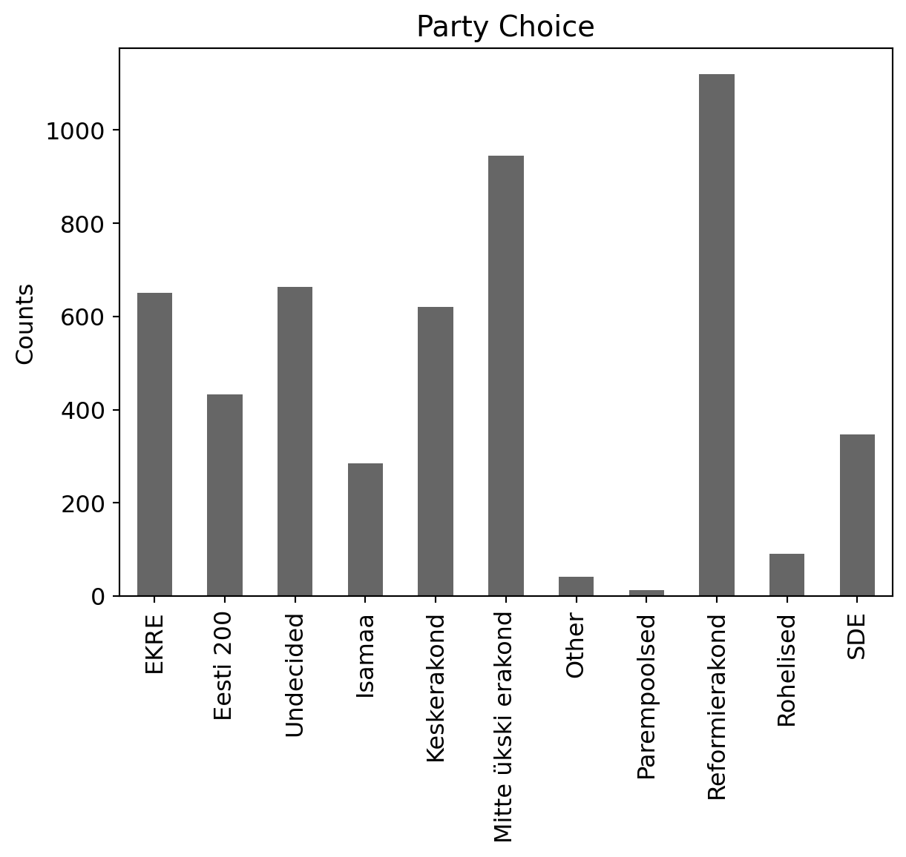
data.electoral_district.unique().size, data.unit.unique().size(12, 24)f, (left, right) = pp.subplots(ncols=2, figsize=(12, 6), sharey=True)
data.electoral_district.value_counts(normalize=True).plot(kind='bar', color=['black', 'darkgray'], ax=left)
data.unit.value_counts(normalize=True).plot(kind='bar', color=['darkgray', 'black'])
left.set_xticklabels(left.get_xticklabels(), rotation=90)
f.tight_layout();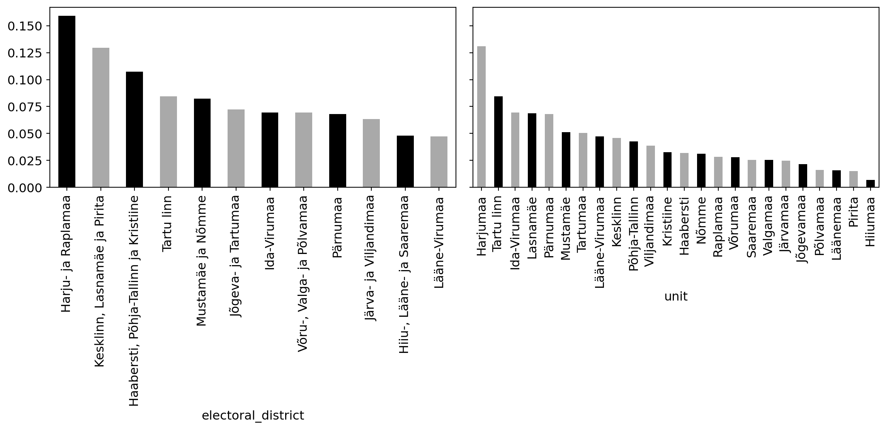
f, (left, right) = pp.subplots(ncols=2, figsize=(10, 4), sharey=True)
data.age_group.value_counts(normalize=True, sort=False).plot(kind='bar', color=[f'C{i}' for i in range(7)], ax=left);
data.gender.value_counts(normalize=True).plot(kind='bar', color= ['C7', 'C8'], ax=right)
left.set(ylabel='Fraction', xlabel='age group')
f.tight_layout()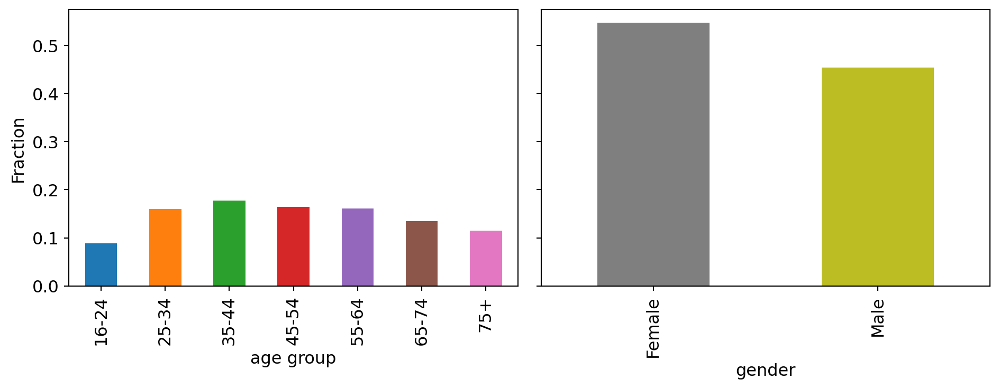
data.education.value_counts()education
Secondary education 2684
Higher education 1948
Basic education 574
Name: count, dtype: int64f, (left, right) = pp.subplots(ncols=2, figsize=(10, 4), sharey=True)
data.education.value_counts(normalize=True).plot(kind='bar', color=[f'C{i}' for i in range(0, 3)], ax=left)
data.nationality.value_counts(normalize=True).plot(kind='bar', color=['C3', 'C4'])
left.set_xticklabels(left.get_xticklabels(), rotation=50)
f.tight_layout();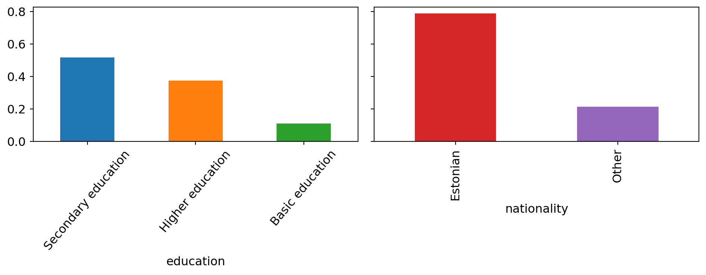
This table registers voter preference. Each row is a voter. Columns include voter demographics, the election district and unit. The rest of the columns are each dedicated to a party. Data are in the thousands with no apparent missing value. There are two types of data; (1) strings that lend themselves to categorization, and (2) binary data indicating whether a given party has received the vote of that row’s voter. There were no irregularities, i.e. more than 1 vote registered for each person; there were no abstentions noted in this dataset either. All the data is categorical with the following number of categories: * Party choice \(→\) 11 * Electoral district \(\rightarrow\) 12 * (Electoral) Unit \(→\) 24 * AGe group \(→\) 7 * Gender \(→\) 2 * Education \(→\) 3 * Nationality \(→\) 2
There is some imbalance in education level, with secondary education being the more proeminent. There is notable imbalance in nationality, with predictable majority of Estonian representation. Party choice, electoral district and unit are also quite imbalanced. Next is to examine party representation breakdown at the group level. Note that I will not consider electoral district and unit hereafter as the emphasis is on demographics as a driver of party choice.
def make_group_percentage(df: pd.DataFrame, category: 'str') -> pd.DataFrame:
"""Computes percentage for each column in a group"""
group = df.groupby(category).sum(numeric_only=True)
group_percent = group.div(group.sum(axis=1), axis=0)*100
return group_percentparty_names = data.loc[:, 'EKRE':].columns.tolist()
party_names['EKRE',
'Eesti 200',
'Undecided',
'Isamaa',
'Keskerakond',
'Mitte ükski erakond',
'Other',
'Parempoolsed',
'Reformierakond',
'Rohelised',
'SDE']data.head()| age_group | education | gender | nationality | electoral_district | unit | EKRE | Eesti 200 | Undecided | Isamaa | Keskerakond | Mitte ükski erakond | Other | Parempoolsed | Reformierakond | Rohelised | SDE | |
|---|---|---|---|---|---|---|---|---|---|---|---|---|---|---|---|---|---|
| 0 | 16-24 | Basic education | Male | Estonian | Haabersti, Põhja-Tallinn ja Kristiine | Kristiine | 0 | 0 | 0 | 0 | 0 | 1 | 0 | 0 | 0 | 0 | 0 |
| 1 | 16-24 | Basic education | Male | Estonian | Harju- ja Raplamaa | Harjumaa | 0 | 0 | 0 | 0 | 0 | 0 | 0 | 0 | 1 | 0 | 0 |
| 2 | 16-24 | Basic education | Male | Estonian | Harju- ja Raplamaa | Harjumaa | 0 | 0 | 0 | 0 | 0 | 0 | 0 | 0 | 0 | 0 | 1 |
| 3 | 16-24 | Basic education | Male | Estonian | Harju- ja Raplamaa | Harjumaa | 1 | 0 | 0 | 0 | 0 | 0 | 0 | 0 | 0 | 0 | 0 |
| 4 | 16-24 | Basic education | Male | Estonian | Harju- ja Raplamaa | Harjumaa | 0 | 0 | 0 | 0 | 1 | 0 | 0 | 0 | 0 | 0 | 0 |
data.groupby('gender').sum(
numeric_only=True
)| EKRE | Eesti 200 | Undecided | Isamaa | Keskerakond | Mitte ükski erakond | Other | Parempoolsed | Reformierakond | Rohelised | SDE | |
|---|---|---|---|---|---|---|---|---|---|---|---|
| gender | |||||||||||
| Female | 271 | 237 | 412 | 119 | 374 | 507 | 18 | 7 | 620 | 55 | 225 |
| Male | 379 | 195 | 251 | 165 | 247 | 438 | 23 | 5 | 500 | 36 | 122 |
f, (left, right) = pp.subplots(ncols=2, figsize=(11, 4), sharey=True)
#gender = data.groupby('gender').sum(numeric_only=True)
#(gender.div(gender.sum(axis=1), axis=0)*100).plot(kind='bar', colormap='tab20c', ax=left, legend=False)
#data.groupby('nationality').sum(numeric_only=True).plot(kind='bar', colormap='tab20c', ax=right, legend=False)
make_group_percentage(data, 'gender').plot(kind='bar', colormap='tab20c', ax=left, legend=False)
make_group_percentage(data, 'nationality').plot(kind='bar', colormap='tab20c', ax=right)
left.set(title='Gender', ylabel='Fraction(%)', xlim=(-0.3, 1.3), xlabel='')
right.set(xlim=(-0.3, 1.3), title='Nationality', xlabel='')
right.legend(frameon=False, loc=(0.34 ,0.04), fontsize=10)
right.grid(axis='y', alpha=0.5, ls=':')
left.grid(axis='y', alpha=0.5, ls=':')
f.tight_layout();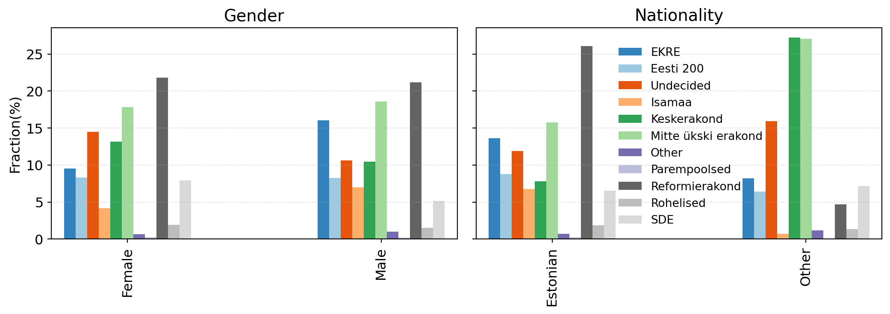
f, (top, bottom) = pp.subplots(nrows=2, figsize=(12, 8))
#data.groupby('age_group').sum(numeric_only=True)
make_group_percentage(data, 'age_group').plot(kind='bar', colormap='tab20c', ax=top, legend=False)
#data.groupby('education').sum(numeric_only=True)
make_group_percentage(data, 'education').plot(kind='bar', colormap='tab20c', ax=bottom, legend=False, )
top.set(title='Age Group', ylabel='Fraction(%)', xlabel='')
top.set_xticklabels(top.get_xticklabels(), rotation=0)
bottom.legend(frameon=False, loc=(0.24, 0.04), fontsize=10)
bottom.set_xticklabels(bottom.get_xticklabels(), rotation=0)
bottom.set(ylabel='Fraction(%)', title='Education', xlim=(-0.3, 2.3), xlabel='')
bottom.grid(axis='y', alpha=0.5, ls=':')
top.grid(axis='y', alpha=0.5, ls=':')
f.tight_layout();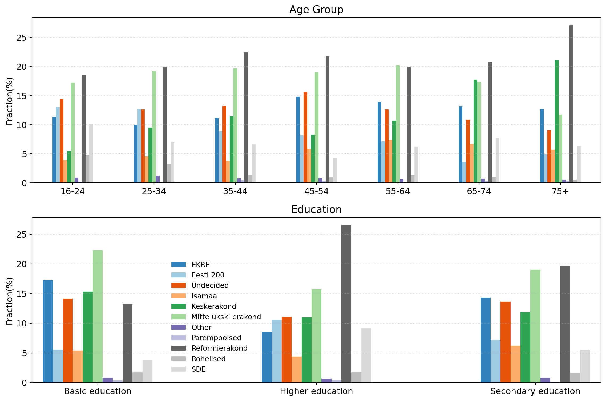
The goal is to predict party preference on the basis of available demographic data. I will first start with looking at two categories; education and nationality. The below is some data encoding to ease model fitting and clarity of plotted results. In particular note the model coordinate names; ‘party_choice’, ‘education’, ‘nationality’, ‘obs_idx’. The latter is just the row index of the dataframe containing the observations; each row corresponding to one observation.
# response variable encoding
party_choice = pd.Categorical(data[party_names].idxmax(axis=1), categories=party_names, ordered=True)
party_choice_label = party_choice.categories.to_list()
party_choice_code = party_choice.codes
# input variables encoding
education_code, education_label = data.education.factorize(sort=True)
nationality_code, nationality_label = data.nationality.factorize(sort=True)
# setting model coordinates
coords = {
'party_choice': party_choice_label,
'education': education_label,
'nationality': nationality_label,
'obs_idx': data.index} # observation index, the row location of an observation in the dataframe.Below I write a first model using a baseline intercept and I use nationality and education as predictors and baseline offsets. The corresponding coefficients have ‘party choice’ as dimension (11 possibilities) and in the case of education and nationality, have also a dimension of ‘education’ (3 possibilities) and ‘nationality’ (2 possibilities), respectively. These are linearly combined and passed to a softmax function to scale the output to the \((0-1)\) interval, as shown below. \[ p = softmax(α_{baseline} + α_{nationality}[\small{nationality\_category}] + α_{education}[\small{education\_category}]) \]
As prior distribution for all three coefficients, instead of using the \(\mathcal{Normal}\) distribution, I use below the \(\mathcal{Zero-sum\ Normal}\). This distribution imposes zero sum constraints on specified axes of the fitted coefficients, thereby addressing the problem of overparameterization and identifiability that often plague categorical regression models; a subject of my blog post found here.
Finally I use for likelihood the \(\mathcal{Categorical}\) distribution, which is a n-dimensional \(\mathcal{Bernoulli}\) process, and through which I expose the model to the data.
def build_model1(α_sigma=1, α_nat_sigma=1, α_edu_sigma=1):
with pm.Model(coords=coords) as model1:
# Data containers
party_choice_idx = pm.Data('party_choice_index', party_choice_code, dims='obs_idx')
nationality_idx = pm.Data('nationality_index', nationality_code, dims='obs_idx')
education_idx = pm.Data('eductation_index', education_code, dims='obs_idx')
# Model priors
# baseline
α = pm.ZeroSumNormal('α', sigma=α_sigma, dims='party_choice')
# baseline offset due to nationality
α_nationality = pm.ZeroSumNormal('α_nationality', sigma=α_nat_sigma, dims=('nationality', 'party_choice'), n_zerosum_axes=2)
# baseline offset due to education
α_education = pm.ZeroSumNormal('α_education', sigma=α_edu_sigma, dims=('education', 'party_choice'), n_zerosum_axes=2)
# Link function for choice probability
p = pm.math.softmax(α + α_nationality[nationality_idx] + α_education[education_idx], axis=-1)
# Likelihood
_ = pm.Categorical('y', p=p, observed=party_choice_idx, dims='obs_idx')
return model1model1 = build_model1()Below is the model’s diagram with dimension information included.
model1.to_graphviz()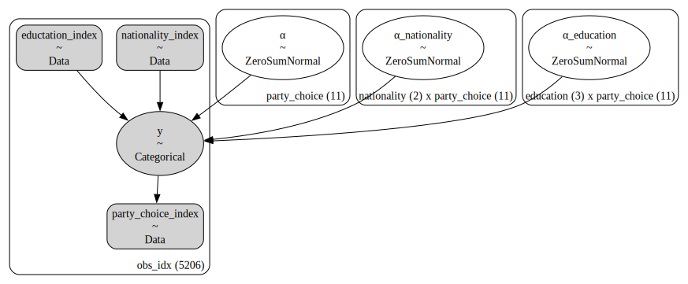
Next is to sample model priors to see the soundness of assumptions made
with model1:
idata1 = pm.sample_prior_predictive(model=model1)
idata1.extend(pm.sample(chains=4, draws=2000, random_seed=42))
idata1.extend(pm.sample_posterior_predictive(idata1))Sampling: [y, α, α_education, α_nationality]
Initializing NUTS using jitter+adapt_diag...
Multiprocess sampling (4 chains in 4 jobs)
NUTS: [α, α_nationality, α_education]Sampling 4 chains for 1_000 tune and 2_000 draw iterations (4_000 + 8_000 draws total) took 88 seconds.
Sampling: [y]def plot_forward_samples(
idata: az.InferenceData, categories:list, categories_name:str,
figsize=(12, 6), plot_prior=True, plot_posterior=True):
"""A quick function to plot model predictives. """
f, (left, right) = pp.subplots(1, 2, figsize=figsize, sharey=True)
xticks = [i + 0.5 for i in range(len(categories))]
if plot_prior:
az.plot_ppc(idata, group="prior", ax=left)
left.set(
xticks=xticks,
)
left.set_xticklabels(categories, fontsize=10, rotation=30)
left.set_xlabel(categories_name, fontsize=16)
left.legend(frameon=True, fontsize=11)
else:
left.set_visible(False)
if plot_posterior:
az.plot_ppc(idata, ax=right)
right.set(
xticks=xticks,
)
right.set_xticklabels(categories, fontsize=10, rotation=30)
right.set_xlabel(categories_name, fontsize=16)
right.legend(frameon=True, fontsize=11)
else:
right.set_visible(False)
f.tight_layout()
return f, (left, right)mean_win = pd.Series(party_choice_code).value_counts(normalize=True).round(3).sort_index()
f, (axl, axr) = plot_forward_samples(idata1, categories=party_choice_label, categories_name='party choice', figsize=(12, 6))
axl.set_xticklabels(axl.get_xticklabels(), rotation=60);
axl.bar(x=axl.get_xticks(), height=mean_win.values, color='k', fill=False, lw=3, width=1, zorder=13, label='data');
axr.set_xticklabels(axr.get_xticklabels(), rotation=60);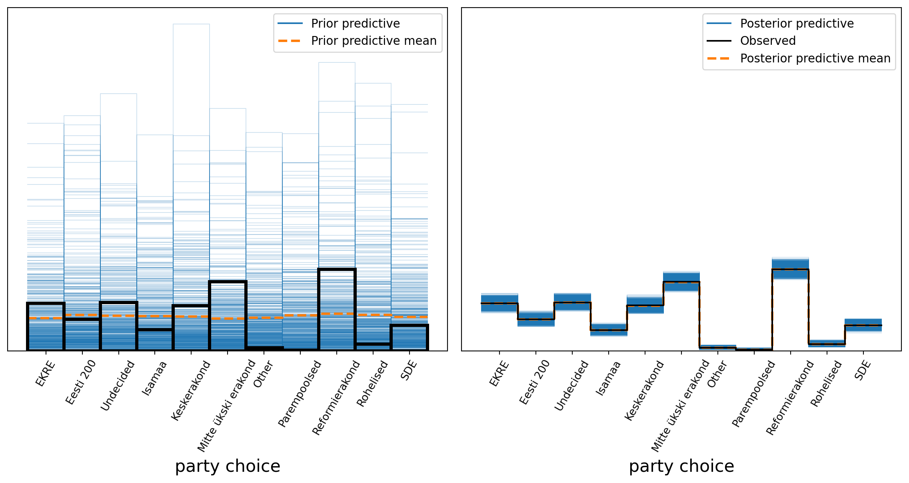
Left, in blue lines are sample outcomes for each party choice, before the model has seen the data. Right, model fit results (posterior distribution for each category). The model seems to have learned the posterior distribution well. The model did take some time to fit though and in spite of the lack of difergences, one wonders if sampling could be more efficient. Domain experts have suggested a tighter variance on the coefficient priors could indeed ease sampling. Model1b integrates this domain knowledge as follows:
model1b = build_model1(α_sigma=0.5, α_edu_sigma=0.2, α_nat_sigma=0.3)with model1b:
idata1b = pm.sample_prior_predictive()
idata1b.extend(pm.sample(chains=4, draws=2000, random_seed=42))
idata1b.extend(pm.sample_posterior_predictive(idata1b))Sampling: [y, α, α_education, α_nationality]
Initializing NUTS using jitter+adapt_diag...
Multiprocess sampling (4 chains in 4 jobs)
NUTS: [α, α_nationality, α_education]Sampling 4 chains for 1_000 tune and 2_000 draw iterations (4_000 + 8_000 draws total) took 78 seconds.
Sampling: [y]There was some speed improvement (~ 18 seconds on a Macbook air M2.) #### Assessing goodness of fit
az.plot_trace(idata1, backend_kwargs={'tight_layout': True});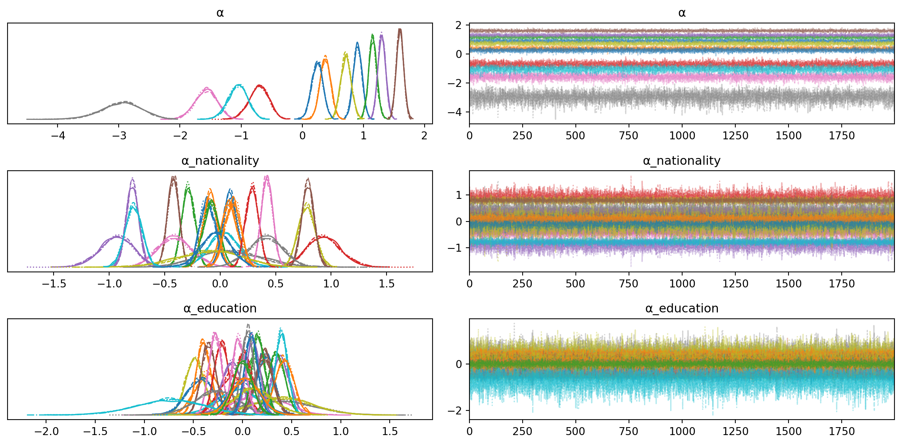
az.plot_trace(idata1b, backend_kwargs=dict(tight_layout=True));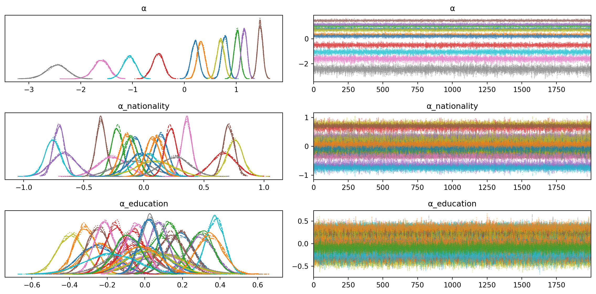
Good mixing in the chains and lack of divergences suggest a good fit. The second model (bottom panel) has tighter posteriors, suggesting a slightly better fit.
az.summary(idata1, var_names='α')| mean | sd | hdi_3% | hdi_97% | mcse_mean | mcse_sd | ess_bulk | ess_tail | r_hat | |
|---|---|---|---|---|---|---|---|---|---|
| α[EKRE] | 0.906 | 0.072 | 0.772 | 1.042 | 0.001 | 0.001 | 6612.0 | 6756.0 | 1.0 |
| α[Eesti 200] | 0.377 | 0.087 | 0.222 | 0.549 | 0.001 | 0.001 | 6715.0 | 6112.0 | 1.0 |
| α[Undecided] | 1.153 | 0.067 | 1.021 | 1.277 | 0.001 | 0.001 | 6441.0 | 6223.0 | 1.0 |
| α[Isamaa] | -0.710 | 0.160 | -1.000 | -0.405 | 0.002 | 0.001 | 8356.0 | 6113.0 | 1.0 |
| α[Keskerakond] | 1.302 | 0.063 | 1.178 | 1.415 | 0.001 | 0.001 | 6106.0 | 6320.0 | 1.0 |
| α[Mitte ükski erakond] | 1.599 | 0.059 | 1.486 | 1.709 | 0.001 | 0.001 | 5842.0 | 5910.0 | 1.0 |
| α[Other] | -1.575 | 0.180 | -1.900 | -1.225 | 0.002 | 0.001 | 10091.0 | 6406.0 | 1.0 |
| α[Parempoolsed] | -2.961 | 0.326 | -3.584 | -2.365 | 0.004 | 0.003 | 5747.0 | 6096.0 | 1.0 |
| α[Reformierakond] | 0.716 | 0.084 | 0.552 | 0.865 | 0.001 | 0.001 | 8024.0 | 6563.0 | 1.0 |
| α[Rohelised] | -1.054 | 0.156 | -1.340 | -0.752 | 0.002 | 0.001 | 8262.0 | 6252.0 | 1.0 |
| α[SDE] | 0.246 | 0.093 | 0.072 | 0.419 | 0.001 | 0.001 | 11979.0 | 6935.0 | 1.0 |
az.summary(idata1b, var_names='α')| mean | sd | hdi_3% | hdi_97% | mcse_mean | mcse_sd | ess_bulk | ess_tail | r_hat | |
|---|---|---|---|---|---|---|---|---|---|
| α[EKRE] | 0.781 | 0.064 | 0.660 | 0.899 | 0.001 | 0.000 | 12336.0 | 6688.0 | 1.0 |
| α[Eesti 200] | 0.320 | 0.073 | 0.176 | 0.452 | 0.001 | 0.001 | 10479.0 | 6316.0 | 1.0 |
| α[Undecided] | 1.020 | 0.058 | 0.907 | 1.126 | 0.001 | 0.000 | 10735.0 | 6572.0 | 1.0 |
| α[Isamaa] | -0.509 | 0.109 | -0.723 | -0.310 | 0.001 | 0.001 | 10705.0 | 5825.0 | 1.0 |
| α[Keskerakond] | 1.155 | 0.055 | 1.049 | 1.253 | 0.001 | 0.000 | 10455.0 | 6907.0 | 1.0 |
| α[Mitte ükski erakond] | 1.464 | 0.051 | 1.370 | 1.563 | 0.001 | 0.000 | 9276.0 | 6427.0 | 1.0 |
| α[Other] | -1.609 | 0.147 | -1.889 | -1.333 | 0.001 | 0.001 | 12469.0 | 6006.0 | 1.0 |
| α[Parempoolsed] | -2.461 | 0.202 | -2.849 | -2.089 | 0.002 | 0.001 | 10961.0 | 5924.0 | 1.0 |
| α[Reformierakond] | 0.698 | 0.071 | 0.563 | 0.830 | 0.001 | 0.000 | 10962.0 | 6083.0 | 1.0 |
| α[Rohelised] | -1.065 | 0.121 | -1.295 | -0.843 | 0.001 | 0.001 | 10573.0 | 6503.0 | 1.0 |
| α[SDE] | 0.205 | 0.075 | 0.073 | 0.357 | 0.001 | 0.001 | 11252.0 | 6818.0 | 1.0 |
Looking at the model fit summary tables for the baseline \(α\) parameter, in both cases the \(\hat{R}\) (aka Gelman-Rubin statistic) is 1.0. This indicates good convergence of MCMC chains (I fired up 4 of them for sampling). Interestingly however, in the case of the second model with tighter variance constraints on the priors, the Effective Sample Size corresponding to the sampling of the central portion of the posterior (ess_bulk) shows more efficient sampling in most cases. The posterior is therefore likelier to be better characterized. A similar pattern can be observed in the next 4 tables for \(α_{nationality}\) and \(α_{education}\). Note that in contrast, the tails of the posterior are sampled with similar efficiency in both cases, as noted by ess_tail.
az.summary(idata1, var_names='α_education')| mean | sd | hdi_3% | hdi_97% | mcse_mean | mcse_sd | ess_bulk | ess_tail | r_hat | |
|---|---|---|---|---|---|---|---|---|---|
| α_education[Basic education, EKRE] | 0.234 | 0.088 | 0.072 | 0.400 | 0.001 | 0.001 | 8337.0 | 6406.0 | 1.0 |
| α_education[Basic education, Eesti 200] | -0.359 | 0.125 | -0.602 | -0.134 | 0.001 | 0.001 | 8978.0 | 6077.0 | 1.0 |
| α_education[Basic education, Undecided] | 0.110 | 0.091 | -0.052 | 0.290 | 0.001 | 0.001 | 8579.0 | 6639.0 | 1.0 |
| α_education[Basic education, Isamaa] | -0.110 | 0.129 | -0.352 | 0.129 | 0.001 | 0.001 | 12807.0 | 6272.0 | 1.0 |
| α_education[Basic education, Keskerakond] | 0.385 | 0.091 | 0.212 | 0.555 | 0.001 | 0.001 | 7640.0 | 6648.0 | 1.0 |
| α_education[Basic education, Mitte ükski erakond] | 0.226 | 0.082 | 0.067 | 0.376 | 0.001 | 0.001 | 6905.0 | 6441.0 | 1.0 |
| α_education[Basic education, Other] | 0.148 | 0.276 | -0.357 | 0.665 | 0.003 | 0.003 | 9166.0 | 5883.0 | 1.0 |
| α_education[Basic education, Parempoolsed] | 0.332 | 0.382 | -0.402 | 1.037 | 0.004 | 0.003 | 9250.0 | 6320.0 | 1.0 |
| α_education[Basic education, Reformierakond] | -0.486 | 0.092 | -0.658 | -0.317 | 0.001 | 0.001 | 9580.0 | 6485.0 | 1.0 |
| α_education[Basic education, Rohelised] | -0.054 | 0.205 | -0.446 | 0.317 | 0.002 | 0.002 | 10698.0 | 6133.0 | 1.0 |
| α_education[Basic education, SDE] | -0.426 | 0.144 | -0.696 | -0.155 | 0.001 | 0.001 | 11192.0 | 6408.0 | 1.0 |
| α_education[Higher education, EKRE] | -0.399 | 0.072 | -0.530 | -0.259 | 0.001 | 0.001 | 8977.0 | 6374.0 | 1.0 |
| α_education[Higher education, Eesti 200] | 0.348 | 0.084 | 0.200 | 0.515 | 0.001 | 0.001 | 8692.0 | 5956.0 | 1.0 |
| α_education[Higher education, Undecided] | -0.216 | 0.071 | -0.343 | -0.075 | 0.001 | 0.001 | 8929.0 | 6048.0 | 1.0 |
| α_education[Higher education, Isamaa] | -0.110 | 0.098 | -0.292 | 0.076 | 0.001 | 0.001 | 13473.0 | 6687.0 | 1.0 |
| α_education[Higher education, Keskerakond] | -0.347 | 0.072 | -0.481 | -0.212 | 0.001 | 0.001 | 8540.0 | 6733.0 | 1.0 |
| α_education[Higher education, Mitte ükski erakond] | -0.278 | 0.064 | -0.395 | -0.158 | 0.001 | 0.001 | 7817.0 | 6747.0 | 1.0 |
| α_education[Higher education, Other] | -0.259 | 0.219 | -0.655 | 0.164 | 0.002 | 0.002 | 10544.0 | 6202.0 | 1.0 |
| α_education[Higher education, Parempoolsed] | 0.414 | 0.304 | -0.160 | 0.981 | 0.003 | 0.003 | 8511.0 | 6058.0 | 1.0 |
| α_education[Higher education, Reformierakond] | 0.397 | 0.064 | 0.279 | 0.516 | 0.001 | 0.000 | 8557.0 | 6525.0 | 1.0 |
| α_education[Higher education, Rohelised] | 0.021 | 0.152 | -0.253 | 0.314 | 0.001 | 0.002 | 11264.0 | 5934.0 | 1.0 |
| α_education[Higher education, SDE] | 0.428 | 0.094 | 0.258 | 0.610 | 0.001 | 0.001 | 11307.0 | 6711.0 | 1.0 |
| α_education[Secondary education, EKRE] | 0.164 | 0.067 | 0.039 | 0.290 | 0.001 | 0.000 | 9386.0 | 6782.0 | 1.0 |
| α_education[Secondary education, Eesti 200] | 0.011 | 0.085 | -0.150 | 0.169 | 0.001 | 0.001 | 11057.0 | 6734.0 | 1.0 |
| α_education[Secondary education, Undecided] | 0.106 | 0.069 | -0.025 | 0.234 | 0.001 | 0.001 | 10110.0 | 6960.0 | 1.0 |
| α_education[Secondary education, Isamaa] | 0.220 | 0.092 | 0.041 | 0.388 | 0.001 | 0.001 | 13016.0 | 6300.0 | 1.0 |
| α_education[Secondary education, Keskerakond] | -0.038 | 0.070 | -0.167 | 0.094 | 0.001 | 0.001 | 10080.0 | 6738.0 | 1.0 |
| α_education[Secondary education, Mitte ükski erakond] | 0.052 | 0.062 | -0.063 | 0.170 | 0.001 | 0.001 | 9273.0 | 6817.0 | 1.0 |
| α_education[Secondary education, Other] | 0.111 | 0.201 | -0.277 | 0.476 | 0.002 | 0.002 | 11753.0 | 6409.0 | 1.0 |
| α_education[Secondary education, Parempoolsed] | -0.745 | 0.350 | -1.389 | -0.074 | 0.004 | 0.003 | 9203.0 | 6561.0 | 1.0 |
| α_education[Secondary education, Reformierakond] | 0.088 | 0.065 | -0.038 | 0.207 | 0.001 | 0.001 | 9345.0 | 7035.0 | 1.0 |
| α_education[Secondary education, Rohelised] | 0.033 | 0.144 | -0.235 | 0.302 | 0.001 | 0.002 | 15300.0 | 6318.0 | 1.0 |
| α_education[Secondary education, SDE] | -0.002 | 0.097 | -0.187 | 0.176 | 0.001 | 0.001 | 9201.0 | 7201.0 | 1.0 |
az.summary(idata1b, var_names='α_education')| mean | sd | hdi_3% | hdi_97% | mcse_mean | mcse_sd | ess_bulk | ess_tail | r_hat | |
|---|---|---|---|---|---|---|---|---|---|
| α_education[Basic education, EKRE] | 0.191 | 0.070 | 0.055 | 0.320 | 0.001 | 0.000 | 13539.0 | 6375.0 | 1.0 |
| α_education[Basic education, Eesti 200] | -0.235 | 0.090 | -0.400 | -0.062 | 0.001 | 0.001 | 11990.0 | 7072.0 | 1.0 |
| α_education[Basic education, Undecided] | 0.083 | 0.073 | -0.060 | 0.214 | 0.001 | 0.001 | 12012.0 | 6297.0 | 1.0 |
| α_education[Basic education, Isamaa] | -0.050 | 0.093 | -0.231 | 0.118 | 0.001 | 0.001 | 13607.0 | 6170.0 | 1.0 |
| α_education[Basic education, Keskerakond] | 0.295 | 0.074 | 0.156 | 0.434 | 0.001 | 0.000 | 12671.0 | 6260.0 | 1.0 |
| α_education[Basic education, Mitte ükski erakond] | 0.189 | 0.066 | 0.060 | 0.309 | 0.001 | 0.000 | 12424.0 | 6586.0 | 1.0 |
| α_education[Basic education, Other] | 0.065 | 0.135 | -0.184 | 0.323 | 0.001 | 0.001 | 13651.0 | 6458.0 | 1.0 |
| α_education[Basic education, Parempoolsed] | 0.097 | 0.144 | -0.174 | 0.365 | 0.001 | 0.001 | 13581.0 | 5944.0 | 1.0 |
| α_education[Basic education, Reformierakond] | -0.393 | 0.070 | -0.517 | -0.256 | 0.001 | 0.000 | 11899.0 | 6095.0 | 1.0 |
| α_education[Basic education, Rohelised] | 0.009 | 0.122 | -0.223 | 0.228 | 0.001 | 0.001 | 13491.0 | 6665.0 | 1.0 |
| α_education[Basic education, SDE] | -0.251 | 0.097 | -0.426 | -0.063 | 0.001 | 0.001 | 11271.0 | 6692.0 | 1.0 |
| α_education[Higher education, EKRE] | -0.318 | 0.059 | -0.430 | -0.208 | 0.000 | 0.000 | 14386.0 | 6470.0 | 1.0 |
| α_education[Higher education, Eesti 200] | 0.297 | 0.065 | 0.177 | 0.419 | 0.001 | 0.000 | 12723.0 | 5482.0 | 1.0 |
| α_education[Higher education, Undecided] | -0.155 | 0.057 | -0.261 | -0.047 | 0.001 | 0.000 | 10573.0 | 6068.0 | 1.0 |
| α_education[Higher education, Isamaa] | -0.091 | 0.076 | -0.235 | 0.051 | 0.001 | 0.001 | 14480.0 | 6157.0 | 1.0 |
| α_education[Higher education, Keskerakond] | -0.249 | 0.060 | -0.367 | -0.139 | 0.001 | 0.000 | 12318.0 | 6111.0 | 1.0 |
| α_education[Higher education, Mitte ükski erakond] | -0.214 | 0.053 | -0.316 | -0.116 | 0.000 | 0.000 | 11808.0 | 6247.0 | 1.0 |
| α_education[Higher education, Other] | -0.080 | 0.121 | -0.308 | 0.149 | 0.001 | 0.001 | 15069.0 | 6587.0 | 1.0 |
| α_education[Higher education, Parempoolsed] | 0.080 | 0.137 | -0.178 | 0.335 | 0.001 | 0.001 | 12957.0 | 6326.0 | 1.0 |
| α_education[Higher education, Reformierakond] | 0.373 | 0.050 | 0.276 | 0.462 | 0.000 | 0.000 | 11685.0 | 6693.0 | 1.0 |
| α_education[Higher education, Rohelised] | 0.014 | 0.105 | -0.181 | 0.212 | 0.001 | 0.001 | 16191.0 | 6541.0 | 1.0 |
| α_education[Higher education, SDE] | 0.344 | 0.071 | 0.214 | 0.479 | 0.001 | 0.000 | 10646.0 | 5829.0 | 1.0 |
| α_education[Secondary education, EKRE] | 0.127 | 0.053 | 0.031 | 0.229 | 0.000 | 0.000 | 12694.0 | 6755.0 | 1.0 |
| α_education[Secondary education, Eesti 200] | -0.062 | 0.065 | -0.185 | 0.060 | 0.001 | 0.001 | 11771.0 | 6722.0 | 1.0 |
| α_education[Secondary education, Undecided] | 0.072 | 0.054 | -0.027 | 0.177 | 0.000 | 0.000 | 12113.0 | 7153.0 | 1.0 |
| α_education[Secondary education, Isamaa] | 0.140 | 0.072 | 0.007 | 0.277 | 0.001 | 0.000 | 14944.0 | 6205.0 | 1.0 |
| α_education[Secondary education, Keskerakond] | -0.046 | 0.055 | -0.144 | 0.062 | 0.000 | 0.000 | 12197.0 | 6874.0 | 1.0 |
| α_education[Secondary education, Mitte ükski erakond] | 0.025 | 0.049 | -0.068 | 0.115 | 0.000 | 0.000 | 12274.0 | 6695.0 | 1.0 |
| α_education[Secondary education, Other] | 0.015 | 0.119 | -0.205 | 0.239 | 0.001 | 0.001 | 14454.0 | 6886.0 | 1.0 |
| α_education[Secondary education, Parempoolsed] | -0.177 | 0.136 | -0.437 | 0.075 | 0.001 | 0.001 | 14120.0 | 6326.0 | 1.0 |
| α_education[Secondary education, Reformierakond] | 0.020 | 0.050 | -0.073 | 0.112 | 0.000 | 0.000 | 12133.0 | 7066.0 | 1.0 |
| α_education[Secondary education, Rohelised] | -0.023 | 0.100 | -0.209 | 0.162 | 0.001 | 0.001 | 13259.0 | 5827.0 | 1.0 |
| α_education[Secondary education, SDE] | -0.092 | 0.070 | -0.223 | 0.041 | 0.001 | 0.001 | 11114.0 | 6683.0 | 1.0 |
az.summary(idata1, var_names='α_nationality')| mean | sd | hdi_3% | hdi_97% | mcse_mean | mcse_sd | ess_bulk | ess_tail | r_hat | |
|---|---|---|---|---|---|---|---|---|---|
| α_nationality[Estonian, EKRE] | 0.091 | 0.064 | -0.031 | 0.210 | 0.001 | 0.001 | 7281.0 | 6421.0 | 1.0 |
| α_nationality[Estonian, Eesti 200] | 0.081 | 0.072 | -0.059 | 0.213 | 0.001 | 0.001 | 8736.0 | 6470.0 | 1.0 |
| α_nationality[Estonian, Undecided] | -0.287 | 0.058 | -0.394 | -0.182 | 0.001 | 0.001 | 6742.0 | 6367.0 | 1.0 |
| α_nationality[Estonian, Isamaa] | 0.935 | 0.151 | 0.660 | 1.228 | 0.002 | 0.001 | 8963.0 | 5827.0 | 1.0 |
| α_nationality[Estonian, Keskerakond] | -0.791 | 0.056 | -0.888 | -0.677 | 0.001 | 0.000 | 6695.0 | 6262.0 | 1.0 |
| α_nationality[Estonian, Mitte ükski erakond] | -0.422 | 0.052 | -0.520 | -0.327 | 0.001 | 0.000 | 6279.0 | 6162.0 | 1.0 |
| α_nationality[Estonian, Other] | -0.407 | 0.155 | -0.703 | -0.120 | 0.001 | 0.001 | 12316.0 | 6225.0 | 1.0 |
| α_nationality[Estonian, Parempoolsed] | 0.095 | 0.292 | -0.427 | 0.655 | 0.004 | 0.003 | 5923.0 | 5253.0 | 1.0 |
| α_nationality[Estonian, Reformierakond] | 0.780 | 0.076 | 0.639 | 0.921 | 0.001 | 0.001 | 8745.0 | 6390.0 | 1.0 |
| α_nationality[Estonian, Rohelised] | 0.039 | 0.135 | -0.209 | 0.290 | 0.001 | 0.001 | 10870.0 | 6037.0 | 1.0 |
| α_nationality[Estonian, SDE] | -0.113 | 0.070 | -0.236 | 0.024 | 0.001 | 0.001 | 10342.0 | 6071.0 | 1.0 |
| α_nationality[Other, EKRE] | -0.091 | 0.064 | -0.210 | 0.031 | 0.001 | 0.001 | 7281.0 | 6421.0 | 1.0 |
| α_nationality[Other, Eesti 200] | -0.081 | 0.072 | -0.213 | 0.059 | 0.001 | 0.001 | 8736.0 | 6470.0 | 1.0 |
| α_nationality[Other, Undecided] | 0.287 | 0.058 | 0.182 | 0.394 | 0.001 | 0.001 | 6742.0 | 6367.0 | 1.0 |
| α_nationality[Other, Isamaa] | -0.935 | 0.151 | -1.228 | -0.660 | 0.002 | 0.001 | 8963.0 | 5827.0 | 1.0 |
| α_nationality[Other, Keskerakond] | 0.791 | 0.056 | 0.677 | 0.888 | 0.001 | 0.000 | 6695.0 | 6262.0 | 1.0 |
| α_nationality[Other, Mitte ükski erakond] | 0.422 | 0.052 | 0.327 | 0.520 | 0.001 | 0.000 | 6279.0 | 6162.0 | 1.0 |
| α_nationality[Other, Other] | 0.407 | 0.155 | 0.120 | 0.703 | 0.001 | 0.001 | 12316.0 | 6225.0 | 1.0 |
| α_nationality[Other, Parempoolsed] | -0.095 | 0.292 | -0.655 | 0.427 | 0.004 | 0.003 | 5923.0 | 5253.0 | 1.0 |
| α_nationality[Other, Reformierakond] | -0.780 | 0.076 | -0.921 | -0.639 | 0.001 | 0.001 | 8745.0 | 6390.0 | 1.0 |
| α_nationality[Other, Rohelised] | -0.039 | 0.135 | -0.290 | 0.209 | 0.001 | 0.001 | 10870.0 | 6037.0 | 1.0 |
| α_nationality[Other, SDE] | 0.113 | 0.070 | -0.024 | 0.236 | 0.001 | 0.001 | 10342.0 | 6071.0 | 1.0 |
az.summary(idata1b, var_names='α_nationality')| mean | sd | hdi_3% | hdi_97% | mcse_mean | mcse_sd | ess_bulk | ess_tail | r_hat | |
|---|---|---|---|---|---|---|---|---|---|
| α_nationality[Estonian, EKRE] | 0.144 | 0.057 | 0.039 | 0.251 | 0.001 | 0.000 | 12637.0 | 6667.0 | 1.0 |
| α_nationality[Estonian, Eesti 200] | 0.112 | 0.062 | -0.006 | 0.229 | 0.001 | 0.000 | 11945.0 | 6603.0 | 1.0 |
| α_nationality[Estonian, Undecided] | -0.223 | 0.049 | -0.315 | -0.136 | 0.000 | 0.000 | 11503.0 | 7039.0 | 1.0 |
| α_nationality[Estonian, Isamaa] | 0.669 | 0.101 | 0.476 | 0.854 | 0.001 | 0.001 | 11064.0 | 6258.0 | 1.0 |
| α_nationality[Estonian, Keskerakond] | -0.707 | 0.046 | -0.795 | -0.621 | 0.000 | 0.000 | 11305.0 | 6511.0 | 1.0 |
| α_nationality[Estonian, Mitte ükski erakond] | -0.357 | 0.043 | -0.439 | -0.277 | 0.000 | 0.000 | 10679.0 | 6792.0 | 1.0 |
| α_nationality[Estonian, Other] | -0.260 | 0.121 | -0.489 | -0.035 | 0.001 | 0.001 | 12611.0 | 6075.0 | 1.0 |
| α_nationality[Estonian, Parempoolsed] | -0.091 | 0.153 | -0.378 | 0.192 | 0.001 | 0.001 | 11387.0 | 6724.0 | 1.0 |
| α_nationality[Estonian, Reformierakond] | 0.758 | 0.065 | 0.630 | 0.875 | 0.001 | 0.000 | 12215.0 | 6441.0 | 1.0 |
| α_nationality[Estonian, Rohelised] | 0.026 | 0.105 | -0.156 | 0.236 | 0.001 | 0.001 | 12021.0 | 6444.0 | 1.0 |
| α_nationality[Estonian, SDE] | -0.071 | 0.062 | -0.186 | 0.043 | 0.001 | 0.000 | 11030.0 | 6307.0 | 1.0 |
| α_nationality[Other, EKRE] | -0.144 | 0.057 | -0.251 | -0.039 | 0.001 | 0.000 | 12637.0 | 6667.0 | 1.0 |
| α_nationality[Other, Eesti 200] | -0.112 | 0.062 | -0.229 | 0.006 | 0.001 | 0.000 | 11945.0 | 6603.0 | 1.0 |
| α_nationality[Other, Undecided] | 0.223 | 0.049 | 0.136 | 0.315 | 0.000 | 0.000 | 11503.0 | 7039.0 | 1.0 |
| α_nationality[Other, Isamaa] | -0.669 | 0.101 | -0.854 | -0.476 | 0.001 | 0.001 | 11064.0 | 6258.0 | 1.0 |
| α_nationality[Other, Keskerakond] | 0.707 | 0.046 | 0.621 | 0.795 | 0.000 | 0.000 | 11305.0 | 6511.0 | 1.0 |
| α_nationality[Other, Mitte ükski erakond] | 0.357 | 0.043 | 0.277 | 0.439 | 0.000 | 0.000 | 10679.0 | 6792.0 | 1.0 |
| α_nationality[Other, Other] | 0.260 | 0.121 | 0.035 | 0.489 | 0.001 | 0.001 | 12611.0 | 6075.0 | 1.0 |
| α_nationality[Other, Parempoolsed] | 0.091 | 0.153 | -0.192 | 0.378 | 0.001 | 0.001 | 11387.0 | 6724.0 | 1.0 |
| α_nationality[Other, Reformierakond] | -0.758 | 0.065 | -0.875 | -0.630 | 0.001 | 0.000 | 12215.0 | 6441.0 | 1.0 |
| α_nationality[Other, Rohelised] | -0.026 | 0.105 | -0.236 | 0.156 | 0.001 | 0.001 | 12021.0 | 6444.0 | 1.0 |
| α_nationality[Other, SDE] | 0.071 | 0.062 | -0.043 | 0.186 | 0.001 | 0.000 | 11030.0 | 6307.0 | 1.0 |
Given the above, I hereafter drop the first model with the more naive priors and continue with the second model with the more informative priors.
Now to check the impact of each predictor on voter preference by examining the posterior distribution, its central tendency and spread and how it relates to the reference value of 0, which corresponds to to effect. Note that: * The orange number situates probabilistically the reference value (0=neither favorable nor unfavorable.) * The black line corresponds to the 94% Highest Density Interval (HDI) - the narrowest interval containing 94% of the posterior distribution. * The choice of 94% is a reminder that there is nothing magical about this number. Analysts should determine the appropriate size of the credibility interval that works best for their use case.
* This corresponds to a proabilistic statement; i.e. there is a 94% chance that given this data and this model, a voter correponding to this category would have an an offset within the HDI.
az.plot_posterior(idata1b, var_names='α', ref_val=0, textsize=16);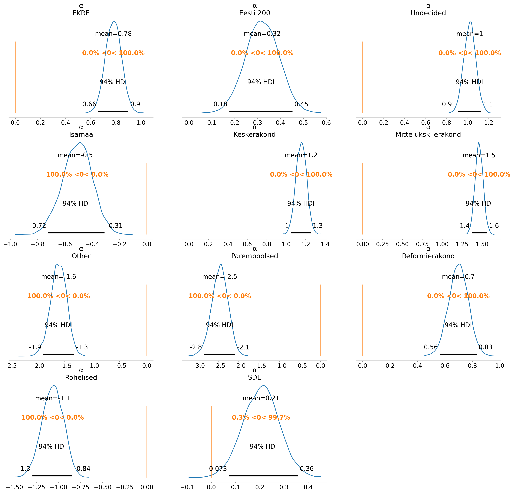
az.plot_posterior(idata1b, var_names='α_education', ref_val=0, backend_kwargs=dict(tight_layout=True), textsize=20);
f, axs = pp.subplots(ncols=3, nrows=8, figsize=(15, 40))
for ax in axs.ravel()[-2:]:
ax.set_visible(False)
az.plot_posterior(idata1b, var_names='α_nationality', backend_kwargs=dict(tight_layout=True), ref_val=0, ax=axs, textsize=10);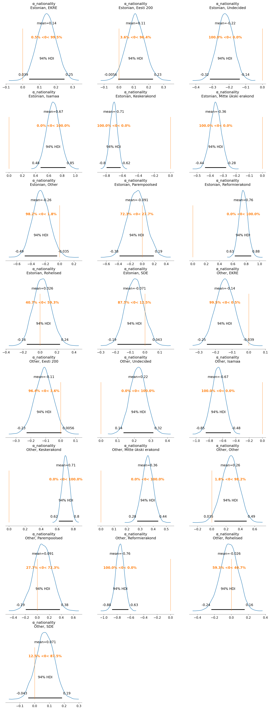
In accordance with the Bayesian workflow, the next step is to build a slightly more complex model, in this case by adding gender and vote age group as predictors to nationality and education, and see if can extract further insight. The model type is the same, just with a total of 4 offsets to the baseline instead of 2. I will also use stronger informative priors as I did in the second model that I ended up using for my analysis. Finally, the prior distribution for all coefficients is again the ZeroSumNormal distribution that I use to avoid non-identifiability due to overparameterization. But first, to encode the additional predictors…
gender_code, gender_label = data.gender.factorize(sort=True)
age_gp_code, age_group_label = data.age_group.factorize(sort=True)coords = {
'age group': age_group_label,
'education': education_label,
'gender': gender_label,
'nationality': nationality_label,
'party choice': party_choice_label,
'obs_idx': data.index
}def build_model2(coords, σ_baseline=1, σ_age=1, σ_edu=1, σ_gen=1, σ_nat=1):
with pm.Model(coords=coords) as model2:
age_gp_idx = pm.Data('age_gp', age_gp_code, dims='obs_idx')
educ_idx = pm.Data('education', education_code, dims='obs_idx')
gender_idx = pm.Data('gender', gender_code, dims='obs_idx')
nat_idx = pm.Data('nationality', nationality_code, dims='obs_idx')
party_choice_idx = pm.Data('party choice', party_choice_code, dims='obs_idx')
α_baseline = pm.ZeroSumNormal('α_baseline', sigma=σ_baseline, dims='party choice')
α_age_group = pm.ZeroSumNormal('α_age_group', sigma=σ_age, dims=('age group', 'party choice'), n_zerosum_axes=2)
α_education = pm.ZeroSumNormal('α_education', sigma=σ_edu, dims=('education', 'party choice'), n_zerosum_axes=2)
α_gender = pm.ZeroSumNormal('α_gender', sigma=σ_gen, dims=('gender', 'party choice'), n_zerosum_axes=2)
α_nationality = pm.ZeroSumNormal('α_nationality', sigma=σ_nat, dims=('nationality', 'party choice'), n_zerosum_axes=2)
μ = α_baseline + α_age_group[age_gp_idx] + α_education[educ_idx] + α_gender[gender_idx] + α_nationality[nat_idx]
p = pm.math.softmax(μ, axis=-1)
_ = pm.Categorical('y', p=p, observed=party_choice_idx, dims='obs_idx')
return model2
model2 = build_model2(coords=coords, σ_baseline=0.3, σ_age=0.4, σ_edu=0.3, σ_gen=0.2, σ_nat=0.2)
model2.to_graphviz()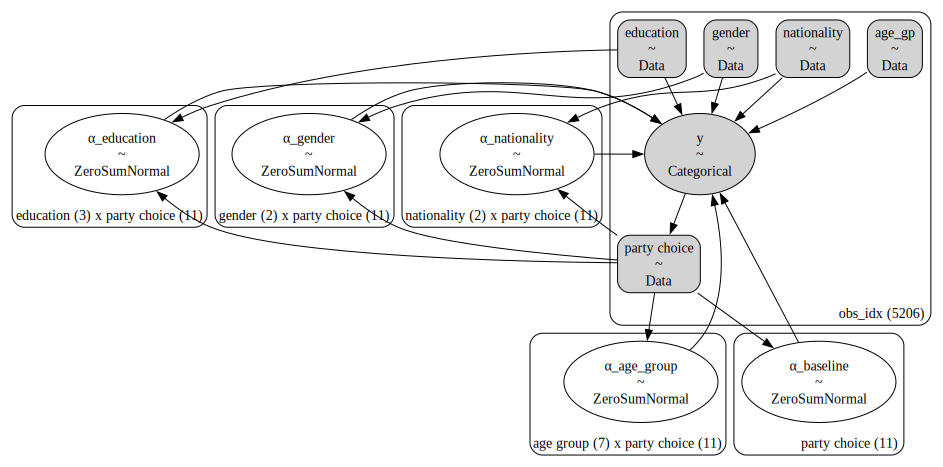
with model2:
idata2 = pm.sample_prior_predictive()
idata2.extend(pm.sample(chains=4, draws=2000, random_seed=42))
idata2.extend(pm.sample_posterior_predictive(idata2))Sampling: [y, α_age_group, α_baseline, α_education, α_gender, α_nationality]
Initializing NUTS using jitter+adapt_diag...
Multiprocess sampling (4 chains in 4 jobs)
NUTS: [α_baseline, α_age_group, α_education, α_gender, α_nationality]Sampling 4 chains for 1_000 tune and 2_000 draw iterations (4_000 + 8_000 draws total) took 126 seconds.
Sampling: [y, α_age_group, α_baseline, α_education, α_gender, α_nationality]az.plot_trace(idata2, backend_kwargs=dict(tight_layout=True));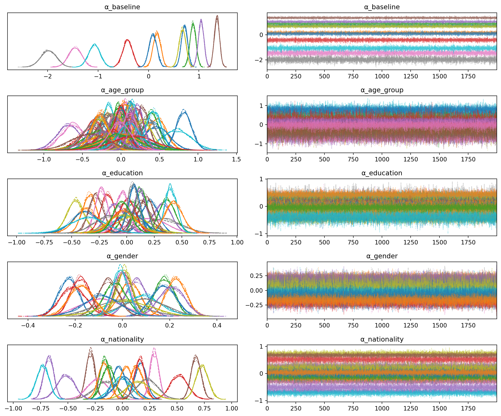
az.summary(idata2, var_names='α_baseline')| mean | sd | hdi_3% | hdi_97% | mcse_mean | mcse_sd | ess_bulk | ess_tail | r_hat | |
|---|---|---|---|---|---|---|---|---|---|
| α_baseline[EKRE] | 0.713 | 0.061 | 0.598 | 0.826 | 0.001 | 0.000 | 13176.0 | 6608.0 | 1.0 |
| α_baseline[Eesti 200] | 0.168 | 0.074 | 0.030 | 0.305 | 0.001 | 0.000 | 12135.0 | 6429.0 | 1.0 |
| α_baseline[Undecided] | 0.882 | 0.059 | 0.772 | 0.995 | 0.001 | 0.000 | 13437.0 | 6458.0 | 1.0 |
| α_baseline[Isamaa] | -0.416 | 0.093 | -0.586 | -0.239 | 0.001 | 0.001 | 13360.0 | 6345.0 | 1.0 |
| α_baseline[Keskerakond] | 1.044 | 0.056 | 0.944 | 1.157 | 0.000 | 0.000 | 14123.0 | 6809.0 | 1.0 |
| α_baseline[Mitte ükski erakond] | 1.358 | 0.051 | 1.260 | 1.448 | 0.000 | 0.000 | 12378.0 | 7131.0 | 1.0 |
| α_baseline[Other] | -1.457 | 0.129 | -1.695 | -1.215 | 0.001 | 0.001 | 13204.0 | 6783.0 | 1.0 |
| α_baseline[Parempoolsed] | -1.982 | 0.151 | -2.258 | -1.695 | 0.001 | 0.001 | 14895.0 | 6244.0 | 1.0 |
| α_baseline[Reformierakond] | 0.674 | 0.066 | 0.549 | 0.797 | 0.001 | 0.000 | 13091.0 | 6590.0 | 1.0 |
| α_baseline[Rohelised] | -1.073 | 0.113 | -1.290 | -0.866 | 0.001 | 0.001 | 13350.0 | 6760.0 | 1.0 |
| α_baseline[SDE] | 0.089 | 0.078 | -0.052 | 0.237 | 0.001 | 0.001 | 11862.0 | 6514.0 | 1.0 |
az.summary(idata2, var_names='α_age_group')| mean | sd | hdi_3% | hdi_97% | mcse_mean | mcse_sd | ess_bulk | ess_tail | r_hat | |
|---|---|---|---|---|---|---|---|---|---|
| α_age_group[16-24, EKRE] | -0.307 | 0.122 | -0.537 | -0.080 | 0.001 | 0.001 | 16900.0 | 5979.0 | 1.0 |
| α_age_group[16-24, Eesti 200] | 0.465 | 0.121 | 0.240 | 0.696 | 0.001 | 0.001 | 16699.0 | 6892.0 | 1.0 |
| α_age_group[16-24, Undecided] | 0.011 | 0.114 | -0.205 | 0.225 | 0.001 | 0.001 | 14880.0 | 5789.0 | 1.0 |
| α_age_group[16-24, Isamaa] | -0.379 | 0.167 | -0.684 | -0.070 | 0.001 | 0.001 | 17991.0 | 5771.0 | 1.0 |
| α_age_group[16-24, Keskerakond] | -0.685 | 0.150 | -0.959 | -0.400 | 0.001 | 0.001 | 17828.0 | 5346.0 | 1.0 |
| ... | ... | ... | ... | ... | ... | ... | ... | ... | ... |
| α_age_group[75+, Other] | -0.044 | 0.252 | -0.509 | 0.438 | 0.002 | 0.003 | 16116.0 | 5912.0 | 1.0 |
| α_age_group[75+, Parempoolsed] | 0.156 | 0.279 | -0.350 | 0.715 | 0.002 | 0.003 | 17245.0 | 6678.0 | 1.0 |
| α_age_group[75+, Reformierakond] | 0.209 | 0.087 | 0.052 | 0.378 | 0.001 | 0.001 | 14009.0 | 6339.0 | 1.0 |
| α_age_group[75+, Rohelised] | -0.412 | 0.234 | -0.838 | 0.033 | 0.002 | 0.002 | 14955.0 | 6332.0 | 1.0 |
| α_age_group[75+, SDE] | -0.017 | 0.138 | -0.287 | 0.228 | 0.001 | 0.002 | 14714.0 | 5968.0 | 1.0 |
77 rows × 9 columns
az.summary(idata2, var_names='α_education')| mean | sd | hdi_3% | hdi_97% | mcse_mean | mcse_sd | ess_bulk | ess_tail | r_hat | |
|---|---|---|---|---|---|---|---|---|---|
| α_education[Basic education, EKRE] | 0.208 | 0.076 | 0.068 | 0.353 | 0.001 | 0.000 | 14723.0 | 6608.0 | 1.0 |
| α_education[Basic education, Eesti 200] | -0.371 | 0.102 | -0.553 | -0.172 | 0.001 | 0.001 | 12680.0 | 6619.0 | 1.0 |
| α_education[Basic education, Undecided] | 0.053 | 0.080 | -0.096 | 0.203 | 0.001 | 0.001 | 15074.0 | 7250.0 | 1.0 |
| α_education[Basic education, Isamaa] | -0.031 | 0.107 | -0.235 | 0.164 | 0.001 | 0.001 | 14127.0 | 6301.0 | 1.0 |
| α_education[Basic education, Keskerakond] | 0.321 | 0.084 | 0.165 | 0.476 | 0.001 | 0.000 | 15304.0 | 6390.0 | 1.0 |
| α_education[Basic education, Mitte ükski erakond] | 0.175 | 0.069 | 0.044 | 0.305 | 0.001 | 0.000 | 14289.0 | 6947.0 | 1.0 |
| α_education[Basic education, Other] | 0.187 | 0.166 | -0.128 | 0.491 | 0.001 | 0.001 | 16358.0 | 5678.0 | 1.0 |
| α_education[Basic education, Parempoolsed] | 0.304 | 0.177 | -0.022 | 0.640 | 0.001 | 0.001 | 16022.0 | 6039.0 | 1.0 |
| α_education[Basic education, Reformierakond] | -0.466 | 0.077 | -0.623 | -0.336 | 0.001 | 0.000 | 15343.0 | 6863.0 | 1.0 |
| α_education[Basic education, Rohelised] | 0.001 | 0.143 | -0.281 | 0.261 | 0.001 | 0.002 | 17370.0 | 6133.0 | 1.0 |
| α_education[Basic education, SDE] | -0.381 | 0.115 | -0.588 | -0.158 | 0.001 | 0.001 | 11402.0 | 6367.0 | 1.0 |
| α_education[Higher education, EKRE] | -0.336 | 0.064 | -0.453 | -0.214 | 0.000 | 0.000 | 16515.0 | 6292.0 | 1.0 |
| α_education[Higher education, Eesti 200] | 0.365 | 0.073 | 0.230 | 0.508 | 0.001 | 0.000 | 13045.0 | 6551.0 | 1.0 |
| α_education[Higher education, Undecided] | -0.173 | 0.063 | -0.291 | -0.055 | 0.001 | 0.000 | 15164.0 | 6155.0 | 1.0 |
| α_education[Higher education, Isamaa] | -0.104 | 0.084 | -0.255 | 0.054 | 0.001 | 0.001 | 16875.0 | 6313.0 | 1.0 |
| α_education[Higher education, Keskerakond] | -0.280 | 0.066 | -0.407 | -0.161 | 0.001 | 0.000 | 15162.0 | 6066.0 | 1.0 |
| α_education[Higher education, Mitte ükski erakond] | -0.231 | 0.056 | -0.339 | -0.129 | 0.000 | 0.000 | 14425.0 | 6429.0 | 1.0 |
| α_education[Higher education, Other] | -0.145 | 0.143 | -0.417 | 0.121 | 0.001 | 0.001 | 17730.0 | 5713.0 | 1.0 |
| α_education[Higher education, Parempoolsed] | 0.050 | 0.157 | -0.249 | 0.353 | 0.001 | 0.002 | 16159.0 | 6270.0 | 1.0 |
| α_education[Higher education, Reformierakond] | 0.400 | 0.055 | 0.302 | 0.507 | 0.000 | 0.000 | 14947.0 | 6182.0 | 1.0 |
| α_education[Higher education, Rohelised] | 0.029 | 0.119 | -0.198 | 0.255 | 0.001 | 0.001 | 18364.0 | 5719.0 | 1.0 |
| α_education[Higher education, SDE] | 0.425 | 0.081 | 0.272 | 0.577 | 0.001 | 0.001 | 11128.0 | 6702.0 | 1.0 |
| α_education[Secondary education, EKRE] | 0.128 | 0.057 | 0.027 | 0.242 | 0.001 | 0.000 | 12401.0 | 6724.0 | 1.0 |
| α_education[Secondary education, Eesti 200] | 0.006 | 0.072 | -0.125 | 0.144 | 0.001 | 0.001 | 11841.0 | 6781.0 | 1.0 |
| α_education[Secondary education, Undecided] | 0.121 | 0.058 | 0.010 | 0.227 | 0.001 | 0.000 | 12417.0 | 7297.0 | 1.0 |
| α_education[Secondary education, Isamaa] | 0.135 | 0.080 | -0.013 | 0.285 | 0.001 | 0.001 | 12403.0 | 6082.0 | 1.0 |
| α_education[Secondary education, Keskerakond] | -0.041 | 0.060 | -0.155 | 0.065 | 0.001 | 0.001 | 13487.0 | 6578.0 | 1.0 |
| α_education[Secondary education, Mitte ükski erakond] | 0.056 | 0.051 | -0.039 | 0.150 | 0.000 | 0.000 | 12410.0 | 7802.0 | 1.0 |
| α_education[Secondary education, Other] | -0.042 | 0.135 | -0.291 | 0.218 | 0.001 | 0.001 | 16671.0 | 6445.0 | 1.0 |
| α_education[Secondary education, Parempoolsed] | -0.355 | 0.159 | -0.647 | -0.057 | 0.001 | 0.001 | 14857.0 | 6236.0 | 1.0 |
| α_education[Secondary education, Reformierakond] | 0.067 | 0.053 | -0.036 | 0.165 | 0.000 | 0.000 | 12447.0 | 6660.0 | 1.0 |
| α_education[Secondary education, Rohelised] | -0.030 | 0.110 | -0.240 | 0.172 | 0.001 | 0.001 | 14568.0 | 6149.0 | 1.0 |
| α_education[Secondary education, SDE] | -0.044 | 0.079 | -0.185 | 0.112 | 0.001 | 0.001 | 10521.0 | 6345.0 | 1.0 |
az.summary(idata2, var_names='α_gender')| mean | sd | hdi_3% | hdi_97% | mcse_mean | mcse_sd | ess_bulk | ess_tail | r_hat | |
|---|---|---|---|---|---|---|---|---|---|
| α_gender[Female, EKRE] | -0.228 | 0.041 | -0.308 | -0.157 | 0.000 | 0.000 | 17338.0 | 6441.0 | 1.0 |
| α_gender[Female, Eesti 200] | 0.031 | 0.047 | -0.057 | 0.118 | 0.000 | 0.000 | 16743.0 | 6071.0 | 1.0 |
| α_gender[Female, Undecided] | 0.178 | 0.041 | 0.101 | 0.253 | 0.000 | 0.000 | 15502.0 | 6196.0 | 1.0 |
| α_gender[Female, Isamaa] | -0.209 | 0.053 | -0.306 | -0.110 | 0.000 | 0.000 | 18282.0 | 5863.0 | 1.0 |
| α_gender[Female, Keskerakond] | 0.059 | 0.043 | -0.023 | 0.139 | 0.000 | 0.000 | 17925.0 | 6789.0 | 1.0 |
| α_gender[Female, Mitte ükski erakond] | 0.005 | 0.036 | -0.062 | 0.072 | 0.000 | 0.000 | 13068.0 | 5882.0 | 1.0 |
| α_gender[Female, Other] | -0.089 | 0.092 | -0.259 | 0.088 | 0.001 | 0.001 | 15853.0 | 5529.0 | 1.0 |
| α_gender[Female, Parempoolsed] | -0.018 | 0.101 | -0.206 | 0.175 | 0.001 | 0.001 | 17983.0 | 6359.0 | 1.0 |
| α_gender[Female, Reformierakond] | 0.009 | 0.035 | -0.056 | 0.074 | 0.000 | 0.000 | 14718.0 | 6247.0 | 1.0 |
| α_gender[Female, Rohelised] | 0.087 | 0.078 | -0.056 | 0.237 | 0.001 | 0.001 | 17240.0 | 6054.0 | 1.0 |
| α_gender[Female, SDE] | 0.174 | 0.050 | 0.082 | 0.270 | 0.000 | 0.000 | 12087.0 | 6810.0 | 1.0 |
| α_gender[Male, EKRE] | 0.228 | 0.041 | 0.157 | 0.308 | 0.000 | 0.000 | 17338.0 | 6441.0 | 1.0 |
| α_gender[Male, Eesti 200] | -0.031 | 0.047 | -0.118 | 0.057 | 0.000 | 0.000 | 16743.0 | 6071.0 | 1.0 |
| α_gender[Male, Undecided] | -0.178 | 0.041 | -0.253 | -0.101 | 0.000 | 0.000 | 15502.0 | 6196.0 | 1.0 |
| α_gender[Male, Isamaa] | 0.209 | 0.053 | 0.110 | 0.306 | 0.000 | 0.000 | 18282.0 | 5863.0 | 1.0 |
| α_gender[Male, Keskerakond] | -0.059 | 0.043 | -0.139 | 0.023 | 0.000 | 0.000 | 17925.0 | 6789.0 | 1.0 |
| α_gender[Male, Mitte ükski erakond] | -0.005 | 0.036 | -0.072 | 0.062 | 0.000 | 0.000 | 13068.0 | 5882.0 | 1.0 |
| α_gender[Male, Other] | 0.089 | 0.092 | -0.088 | 0.259 | 0.001 | 0.001 | 15853.0 | 5529.0 | 1.0 |
| α_gender[Male, Parempoolsed] | 0.018 | 0.101 | -0.175 | 0.206 | 0.001 | 0.001 | 17983.0 | 6359.0 | 1.0 |
| α_gender[Male, Reformierakond] | -0.009 | 0.035 | -0.074 | 0.056 | 0.000 | 0.000 | 14718.0 | 6247.0 | 1.0 |
| α_gender[Male, Rohelised] | -0.087 | 0.078 | -0.237 | 0.056 | 0.001 | 0.001 | 17240.0 | 6054.0 | 1.0 |
| α_gender[Male, SDE] | -0.174 | 0.050 | -0.270 | -0.082 | 0.000 | 0.000 | 12087.0 | 6810.0 | 1.0 |
az.summary(idata2, var_names='α_nationality')| mean | sd | hdi_3% | hdi_97% | mcse_mean | mcse_sd | ess_bulk | ess_tail | r_hat | |
|---|---|---|---|---|---|---|---|---|---|
| α_nationality[Estonian, EKRE] | 0.169 | 0.053 | 0.073 | 0.271 | 0.000 | 0.000 | 14414.0 | 6430.0 | 1.0 |
| α_nationality[Estonian, Eesti 200] | 0.130 | 0.057 | 0.018 | 0.233 | 0.000 | 0.000 | 15715.0 | 7377.0 | 1.0 |
| α_nationality[Estonian, Undecided] | -0.159 | 0.046 | -0.244 | -0.072 | 0.000 | 0.000 | 14413.0 | 7107.0 | 1.0 |
| α_nationality[Estonian, Isamaa] | 0.518 | 0.079 | 0.366 | 0.660 | 0.001 | 0.000 | 13569.0 | 6383.0 | 1.0 |
| α_nationality[Estonian, Keskerakond] | -0.675 | 0.045 | -0.756 | -0.590 | 0.000 | 0.000 | 14815.0 | 6751.0 | 1.0 |
| α_nationality[Estonian, Mitte ükski erakond] | -0.294 | 0.040 | -0.373 | -0.222 | 0.000 | 0.000 | 13450.0 | 6685.0 | 1.0 |
| α_nationality[Estonian, Other] | -0.225 | 0.095 | -0.400 | -0.044 | 0.001 | 0.001 | 16229.0 | 5764.0 | 1.0 |
| α_nationality[Estonian, Parempoolsed] | -0.145 | 0.106 | -0.340 | 0.052 | 0.001 | 0.001 | 15378.0 | 6900.0 | 1.0 |
| α_nationality[Estonian, Reformierakond] | 0.730 | 0.057 | 0.625 | 0.837 | 0.000 | 0.000 | 13500.0 | 6581.0 | 1.0 |
| α_nationality[Estonian, Rohelised] | -0.015 | 0.088 | -0.183 | 0.145 | 0.001 | 0.001 | 14598.0 | 6308.0 | 1.0 |
| α_nationality[Estonian, SDE] | -0.033 | 0.058 | -0.140 | 0.080 | 0.001 | 0.001 | 11830.0 | 6737.0 | 1.0 |
| α_nationality[Other, EKRE] | -0.169 | 0.053 | -0.271 | -0.073 | 0.000 | 0.000 | 14414.0 | 6430.0 | 1.0 |
| α_nationality[Other, Eesti 200] | -0.130 | 0.057 | -0.233 | -0.018 | 0.000 | 0.000 | 15715.0 | 7377.0 | 1.0 |
| α_nationality[Other, Undecided] | 0.159 | 0.046 | 0.072 | 0.244 | 0.000 | 0.000 | 14413.0 | 7107.0 | 1.0 |
| α_nationality[Other, Isamaa] | -0.518 | 0.079 | -0.660 | -0.366 | 0.001 | 0.000 | 13569.0 | 6383.0 | 1.0 |
| α_nationality[Other, Keskerakond] | 0.675 | 0.045 | 0.590 | 0.756 | 0.000 | 0.000 | 14815.0 | 6751.0 | 1.0 |
| α_nationality[Other, Mitte ükski erakond] | 0.294 | 0.040 | 0.222 | 0.373 | 0.000 | 0.000 | 13450.0 | 6685.0 | 1.0 |
| α_nationality[Other, Other] | 0.225 | 0.095 | 0.044 | 0.400 | 0.001 | 0.001 | 16229.0 | 5764.0 | 1.0 |
| α_nationality[Other, Parempoolsed] | 0.145 | 0.106 | -0.052 | 0.340 | 0.001 | 0.001 | 15378.0 | 6900.0 | 1.0 |
| α_nationality[Other, Reformierakond] | -0.730 | 0.057 | -0.837 | -0.625 | 0.000 | 0.000 | 13500.0 | 6581.0 | 1.0 |
| α_nationality[Other, Rohelised] | 0.015 | 0.088 | -0.145 | 0.183 | 0.001 | 0.001 | 14598.0 | 6308.0 | 1.0 |
| α_nationality[Other, SDE] | 0.033 | 0.058 | -0.080 | 0.140 | 0.001 | 0.001 | 11830.0 | 6737.0 | 1.0 |
The fit took predictably longer; 2 minutes and 20 seconds on my macbook air m2. Moreover, * There were no divergences; * Posteriors look sound and the traces exhibit good mixing for all chains; * All \(\hat{R}\) values were 1 * Bulk and tail ESS are about the same as the model with two predictors and relatively informative priors suggesting sampling efficiency has not deteriorated as a result of the increased model complexity.
f, (axl, axr) = plot_forward_samples(idata2, categories=party_choice_label, categories_name='party choice', figsize=(12, 6))
axl.set_xticklabels(axl.get_xticklabels(), rotation=60);
axl.bar(x=axl.get_xticks(), height=mean_win.values, color='k', fill=False, lw=3, width=1, zorder=13, label='data');
axr.set_xticklabels(axr.get_xticklabels(), rotation=60);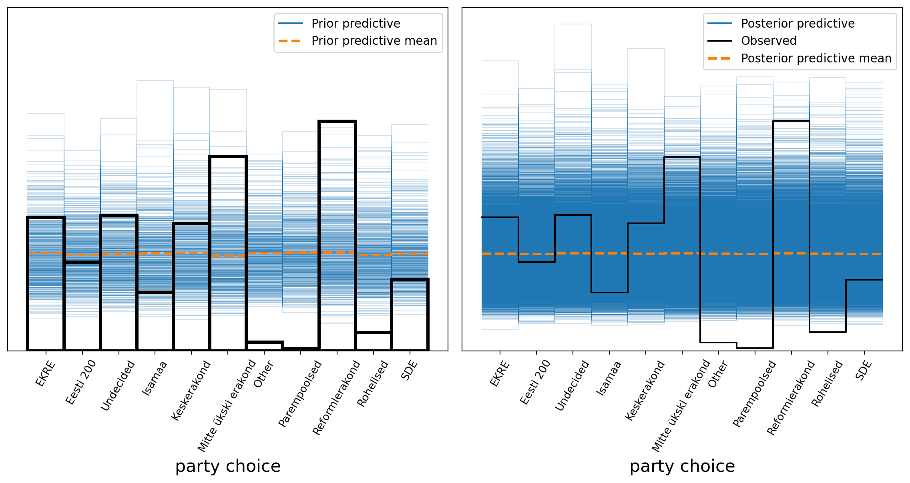